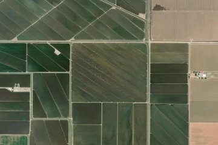

CropLytics sidebar redesign
Static mock for review. Real content from the live app (Rice field 4 miles east of Williams, Colusa County). Map, top bar and type are the current app; only the panel components change. Spec: ../REDESIGN.md. Tokens: tokens.css. Components: components.css.
Before and after: field panel, desktop 1440 x 900
Left: the live app today. Right: the same content with a paper header instead of the green slab, 16px panel corners, rounded meters, tonal and pill buttons, and a quiet disclosure row.

Before
Rice field 4 miles east of Williams
149 acres, rice in 2025, Colusa County
State field no. 0605542, 39.1414° N, 122.0833° W
Your field now

2026 so far JanAprJulOct Thin cover- What is growing, and how far along?
- Thin cover
- How much rain so far this season?
- So far drier than normal1.9 in since 1 Oct. Normal: 3.0 in.
- Will the water limit cover irrigation?
- Short by about 0.2 acre-feet per acreNeeds 5.2 acre-ft/acre a year. Limit: 5.0. example, change it on Compare
After
Desktop: scrolled, header stuck, More detail open
Once the content scrolls, the header compresses to one line (title 20px, facts 14.5px) and gains a soft edge. Sections are separated by 24px of space, not a 2px ink rule. The disclosure is a filled row with a chevron that turns.
Rice field 4 miles east of Williams
149 acres, rice in 2025, Colusa County
- What is the soil like?
- Clay loam Sand 29%Silt 33%Clay 39% Holds 2.1 in of water per foot. Drains slowly. Salt is low.
About the ground
- Soil
- Capay clay loam, clay loam
- Holds
- 2.1 in of water per foot of soil (high)
- Drainage
- Moderately well drained; runoff group D
- Salt
- Low salt (EC 1.0 dS/m)
- Water
- Surface water. Glenn-Colusa Irrigation District.
What happened around here
Click one to move the timeline.
CropLytics helps the grower and adviser decide; it does not replace either.
Desktop: pick your field (chip selected, one row hovered, one row current)
The selected chip is a pale green fill with a check, not the solid green block. Rows lose the hairline-plus-lift hover and use a flat 5% ink layer; the current field gets the same tonal fill as the chip.

Before (Rice selected)
Pick your field
After
Phone 390 x 844: bottom sheet at peek, half and full; pick list
The sheet is paper with 20px top corners and a grey handle (no green bar). Peek shows the field name and one line of facts. Half adds a sideways row of action pills. The bottom tab bar marks the active tab with a tonal pill behind the label.

Before (half)
Rice field 4 miles east of Williams
149 acres, rice in 2025, Colusa County
Rice field 4 miles east of Williams
149 acres, rice in 2025, Colusa County
Your field now
Rice field 4 miles east of Williams
149 acres, rice in 2025, Colusa County
- How much rain so far this season?
- So far drier than normal1.9 in since 1 Oct. Normal: 3.0 in.
- Will the water limit cover irrigation?
- Short by about 0.2 acre-feet per acreNeeds 5.2 acre-ft/acre a year. Limit: 5.0. example, change it on Compare
- Is the soil wetter or drier than usual? And the groundwater?
- Soil about normal; groundwater about normal
- What is the soil like?
- Clay loam Holds 2.1 in of water per foot. Drains slowly. Salt is low.
Pick your field
Components and every state (light, then dark)
Hover, pressed and focus are forced with classes so they can be seen side by side. Focus is a 2px paper gap plus a 2px green ring on every control.